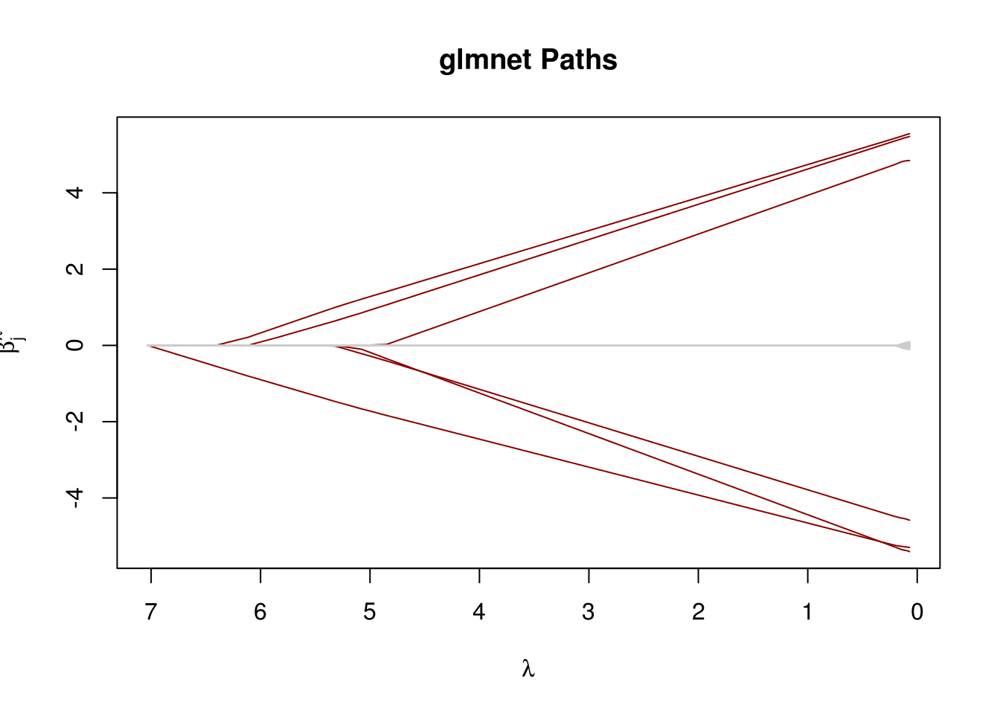
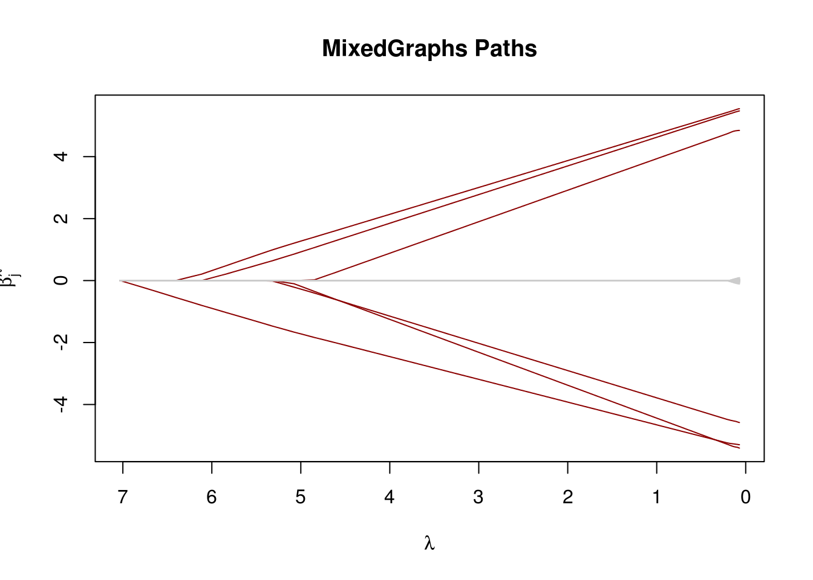

ADMM
ADMM(Alternating Direction Method of Multipliers) is an algorithm which breaking optimization problems into smaller pieces, and each of which are easier to handle. With it, we can easily deal with Lasso regression.
Lasso regression
In MixedGraphs package, we support three different familys, “logistic”, “poisson” and “gaussian”.
Gaussian
\begin{align}
f(\mathbf{\beta}) &= \frac{1}{2n} {\| \mathbf{y} - \mathbf{o} - \mathbf{X} \mathbf{\beta} \|}_2^2+ \frac{1}{2} {\| \mathbf{\beta} - \mathbf{z^{(k-1)}} + \mathbf{u ^ {(k-1)}} \|}_2^2 \\
\mathbf{\beta}^{(k)} &= (\mathbf{X}^T \mathbf{X} / n + \mathbf{I})^{-1} \mathbf{X}^T(\mathbf{y} - \mathbf{o})/n +
(\mathbf{X}^T \mathbf{X} / n + \mathbf{I})^{-1} (\mathbf{z}^{(k-1)} - \mathbf{u}^{(k-1)})
\end{align}
Logistic
\begin{align}
l(y_i; o_i + \mathbf{x_i\beta}) &= - \log (1 + e ^ {o_i + \mathbf{x_i} \mathbf{\beta}}) + y_i(o_i + \mathbf{x_i}\mathbf{\beta}) \\
f(\mathbf{\beta}) &= \frac{1}{n} \sum_{i=1}^{n} [\log (1 + e ^ {o_i + \mathbf{x_i} \mathbf{\beta}}) - y_i(o_i + \mathbf{x_i} \mathbf{\beta})] + \frac{1}{2} {\| \mathbf{\beta} - \mathbf{z^{(k-1)}} + \mathbf{u ^ {(k-1)}} \|}_2^2 \\
\nabla_\beta(f) &= \big(\frac{1}{n} \sum_{i = 1}^{n} \frac{x_{ij}}{1 + e ^ {- ({o_i + \mathbf{x_i}\mathbf{\beta}})}} - y_{i} x_{ij} \big)_j
+ \mathbf{\beta} - \mathbf{z^{(k-1)}} + \mathbf{u^{(k-1)}} \\
\mathcal{H}_\beta(f) &= \big(\frac{1}{n} \sum_{i = 1}^{n} \frac{x_{ij}x_{jk}e ^ {- ({o_i + \mathbf{x_i}\mathbf{\beta}})} } {{(1 + e ^ {- ({o_i + \mathbf{x_i}\mathbf{\beta}})})}^2} \big)_{jk} + \mathbf{I}_{p\times p}
\end{align}
Poisson
\begin{align}
l(y_i; o_i + \mathbf{x_i\beta}) &= y_i(o_i + \mathbf{x_i} \mathbf{\beta}) - e ^ {o_i + \mathbf{x_i} \mathbf{\beta}} \\
f(\mathbf{\beta}) &= \frac{1}{n} \sum_{i=1}^{n} [- y_i(o_i + \mathbf{x_i} \mathbf{\beta}) + e ^ {o_i + \mathbf{x_i} \mathbf{\beta}} ]
+ \frac{1}{2} {\| \mathbf{\beta} - \mathbf{z^{(k-1)}} + \mathbf{u ^ {(k-1)}} \|}_2^2 \\
\nabla_\beta(f) &= \big( \frac{1}{n} \sum_{i=1}^{n} - y_ix_{ij} + x_{ij} e ^ {o_i + \mathbf{x_i} \mathbf{\beta}}\big)_j
+ \mathbf{\beta} - \mathbf{z^{(k-1)}} + \mathbf{u^{(k-1)}}\\
\mathcal{H}_\beta(f) &= \frac{1}{n}(x_{ij}x_{jk}e^{o_i + \mathbf{x_i}\mathbf{\beta}})_{jk} + \mathbf{I}_{p\times p}
\end{align}
Speed up tricks
-
warm start
Use the estimated fit from the previous run of Solver 1 as the initialization.
-
early stopping
Stop the optimizer early when the support has not changed for a number of iterations.
Compare with glmnet
library("glmnet")
library("MixedGraphs")
n <- 200; p <- 500
s <- 6; ## True sparsity
set.seed(1)
X <- matrix(rnorm(n * p), ncol=p)
beta <- rep(0, p)
beta[1:s] <- runif(s, 4, 6) * c(-1, 1)
y <- X %*% beta + rnorm(n)
glmnet_fit <- glmnet(X, y, standardize = FALSE)
glmLasso_fit <- glmLasso(X, y, lambda = glmnet_fit$lambda, support_stability = 10)
